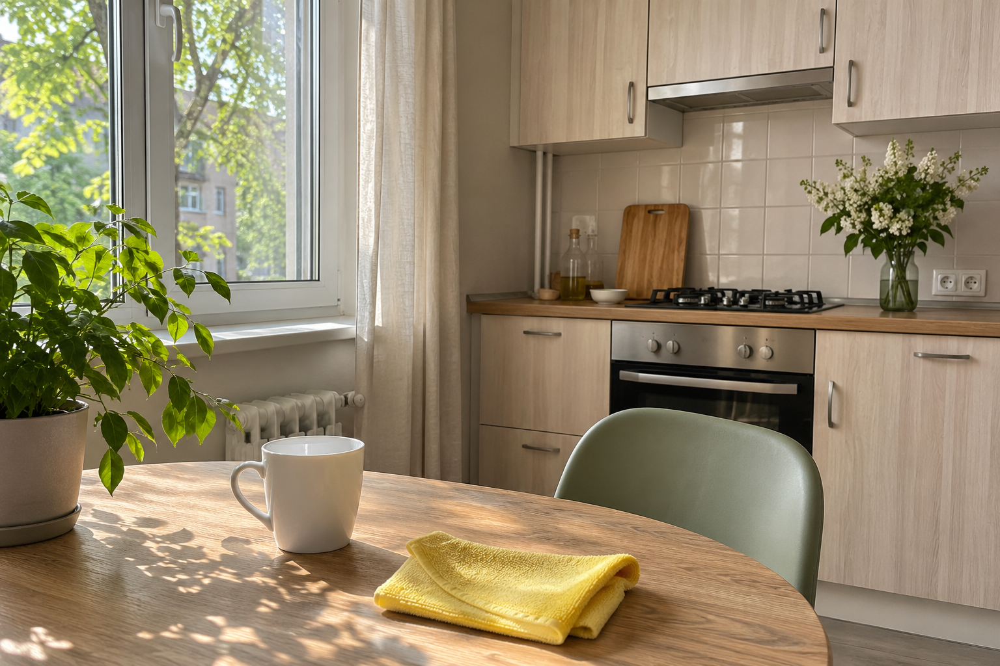

Когда хочется
просто отдохнуть.
Оставить время на сон, прогулку и свои планы.
Клининг квартир · Легко дома
Прогулка, встреча с друзьями или просто тишина с чашкой чая. Пусть в выходном останется место для вас — а уборку возьмём на себя.
Ваш дом — ваши привычки.
Состав работ и пожелания согласуем заранее.

Знакомая история?
Но за кухней находится ванная, за ванной — полы. И свободный день незаметно превращается в ещё один рабочий.
Не всё нужно успевать самому.
Оставить время на сон, прогулку и свои планы.
Разобраться с уборкой без бесконечного «потом».
Сосредоточиться на встрече, а не на тряпке и пылесосе.
Внимание к повседневным деталям
Выберите зону и посмотрите основные задачи. Точный состав уборки зависит от состояния квартиры и ваших пожеланий.
Порядок там, где проходит жизнь
После завтраков, ужинов и разговоров
Чистота в ежедневных мелочах
Меньше сложностей
Без одинаковых решений для всех: сначала разбираемся, какая помощь нужна именно вам.
Какие комнаты убрать, что требует особого внимания и какие у вас пожелания.
Состав работ, стоимость, удобное время и формат доступа в квартиру.
Занимаемся согласованной уборкой, пока вы уделяете время своим делам.
Начните с малого
Отметьте задачи и сохраните список. Он останется у вас — его удобно использовать при обсуждении уборки.
Скачивается текстовый файл. Данные никуда не отправляются.
Перед первым заказом
Стоимость зависит от площади, состояния квартиры и состава работ. Её нужно согласовать после обсуждения задачи — до начала уборки.
Составьте список зон и пожеланий. Возможность отдельной уборки кухни, ванной или других частей квартиры согласуется при обращении.
Формат доступа в квартиру и ваше присутствие нужно согласовать заранее. Важно, чтобы выбранный вариант был удобен для вас.
Отметьте деликатные поверхности и вещи, которые не нужно трогать. По возможности освободите доступ к тем местам, где требуется уборка.
Легко дома
Мы готовимся к запуску. Контакты для записи
появятся здесь — чуть позже.